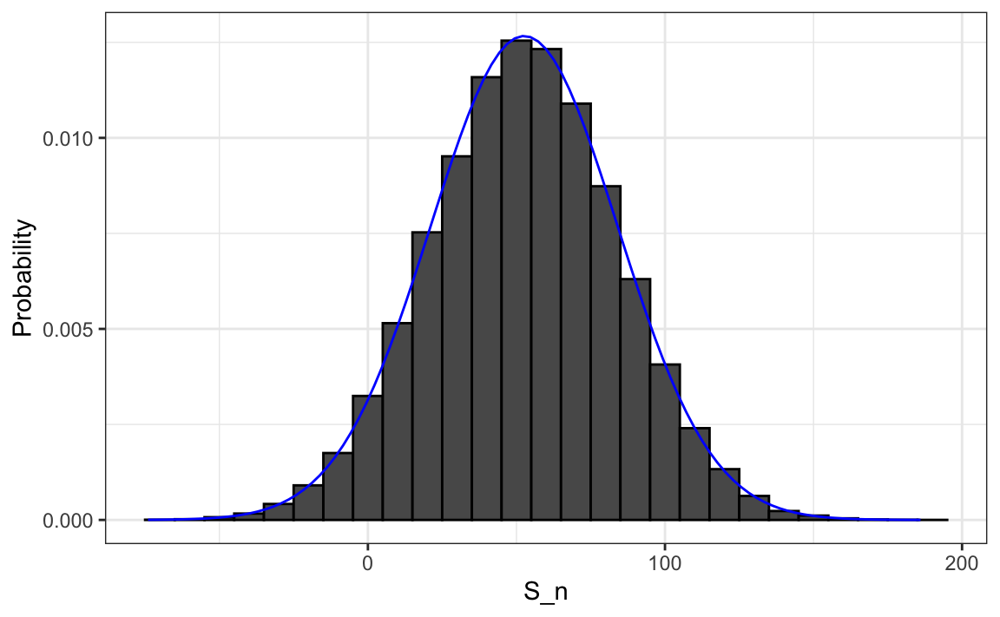

8 Sampling Models and the Central Limit Theorem
In the previous chapter, we introduced random variables and saw how their distributions, expected values, and standard errors describe uncertainty. In this chapter, we build on those ideas by introducing sampling models, which are mathematical abstractions of how data are generated. We then use the Central Limit Theorem (CLT) to approximate the distribution of sums and averages of independent draws. Through a concrete example based on playing roulette in a casino, we show how the CLT can be used to answer practical questions such as “What is the chance of losing money?”
8.1 Sampling models
Many data-generating processes can be effectively modeled as draws from an urn. For example, polling likely voters can be viewed as drawing 0s (Republicans) and 1s (Democrats) from an urn containing the preferences of the entire population. In epidemiology, we often assume that individuals in a study are random draws from a larger population, where each draw corresponds to an individual’s outcome. Similarly, in experimental research, we treat subjects (worms, flies, mice, or humans, for exmaple) as random draws from a broader population. Randomized experiments follow the same logic: each participant’s assignment to treatment or control can be seen as a random draw from an urn.
Because random sampling and random assignment are fundamental to data analysis, sampling models appear everywhere in statistics. To build intuition, we start with games of chance, where randomness is explicit and the link between probability and real outcomes is perfectly clear. We now define a specific example.
Roullete example
Suppose a small casino hires you to decide whether it should install roulette wheels. To keep things simple, imagine 1,000 people each place a single bet on black. The casino wants you to estimate how much money it can expect to make, or lose, and, most importantly, the probability of losing money. If that probability is too high, they’ll skip installing the wheels.
We define a random variable \(S_n\) to represent the casino’s total winnings after \(n\) games. A roulette wheel has 18 red pockets, 18 black pockets, and 2 green ones. The outcome is equivalent to drawing a ball from this urn:
Each of the 1,000 outcomes is an independent draw from this urn. If black comes up, the gambler wins and the casino loses $1 (recorded as −1). Otherwise, the casino wins $1.
Since we already know the proportions of 1s and −1s, we can simplify:
We call this a sampling model because it represents random behavior through repeated sampling from an urn. The casino’s total winnings, define it as \(S_n\), are simply the sum of these independent draws:
s <- sum(x)Before deriving the distribution of total winnings \(S_n\), it’s worth pausing to ask why we study problems like roulette in the first place.
Connecting sampling models to real data
Thinking in terms of a sampling model is central to data analysis under uncertainty. It connects the random variables we study in probability to the datasets we analyze in practice. By imagining data as random draws, from an urn, a population, or a randomization procedure, we clarify what our models represent and what assumptions they rely on.
This perspective also underpins much of modern statistics. Tools like confidence intervals, hypothesis tests, and regression all depend on assumptions derived from sampling models. Understanding these assumptions helps us apply these methods thoughtfully and recognize their limits.
Casino games make these ideas tangible because their sampling models are fully known. The probabilities, such as the number of red, black, and green pockets, are explicit and easy to simulate. In contrast, real-world data come from more complex “urns”, such as populations of individuals with varying heights, incomes, or health outcomes. When we collect data, we are effectively drawing a random sample from such a population.
This way of thinking builds statistical intuition: every dataset represents a sample from some underlying process, and the validity of our conclusions depends on how well our assumptions about that process hold.
8.2 A Monte Carlo Simulation
To find the probability that the casino loses money, we need to estimate the distribution of \(S_n\). In the language of probability, this is \(\Pr(S_n < 0)\). If we define the distribution function \(F(a) = \Pr(S_n \leq a)\), we can answer any question about probabilities involving \(S_n\).
We can estimate \(F(a)\) with a Monte Carlo simulation, generating many realizations of \(S_n\). The following code simulates 1,000 people playing roulette and repeats the process 100,000 times:
The fraction of simulations in which \(S_n \leq a\) approximates \(F(a)\):
mean(s <= a)For instance, the probability of losing money is:
mean(s < 0)
#> [1] 0.0454A histogram and qqplot of \(S_n\) shows that the distribution is approximately normal, an observation that the Central Limit Theorem will soon explain.

8.3 The Central Limit Theorem
The Central Limit Theorem (CLT) states that when the number of draws (the sample size) is large, the distribution of the sum of independent draws is approximately normal. Because sampling models describe so many data-generating processes, the CLT is one of the most important results in statistics.
In the roulette example, the urn contains 20 $1 gains and 18 $1 losses, giving an expected value of:
\[ \mathrm{E}[X] = (20 -18)/38 = 1/19 \approx 0.05. \]
In general, for two possible outcomes \(a\) and \(b\) with probabilities \(p\) and \((1-p)\),
\[ \mathrm{E}[X] = ap + b(1-p). \]
By the properties introduced in Section 7.5, the expected total winnings are:
\[ \mathrm{E}[S_n] = n\,\mathrm{E}[X]. \]
So if 1,000 people play, the casino expects to win about $50 on average.
To quantify uncertainty, we compute the standard error, which measures how much \(S_n\) varies around its expected value. For an urn with two outcomes \(a\) and \(b\), the standard deviation can be shown to be:
\[ \mathrm{SE}[X] = |b - a|\sqrt{p(1-p)}. \]
In the roulette example we obtain:
2*sqrt(90)/19
#> [1] 0.999Thus, the standard error of the sum is:
\[ \mathrm{SE}[S_n] = \sqrt{n}\,\mathrm{SD}[X], \]
which in this case is:
These theoretical values agree closely with the Monte Carlo results:
Using the CLT, we can now compute the probability that the casino loses money without simulation:
which matches our earlier estimate:
mean(s < 0)
#> [1] 0.0454The quantity \((S_n + n)/2\) represents the number of wins for the casino and follows a binomial distribution. Thus, the probability \(\Pr(S_n < 0)\) can also be computed directly:
pbinom(n/2 - 1, size = n, prob = 10/19)
#> [1] 0.0448However, the binomial result applies only to Bernoulli trials. In many real-world settings, data are not binomial, yet we still want to approximate the distribution of sums or averages. For those cases, the CLT provides a general framework that extends far beyond Bernoulli trials.
8.4 How large is large?
The CLT applies when the number of draws is “large”, but large depends on context. In many cases, 30 draws are enough for a good approximation, sometimes even fewer. In the roullette example, when the probabilities of success is very small, much larger samples may be required.
For example, in a lottery where the chance of winning is less than one in a million, even millions of tickets result in only a few winners. In such highly skewed cases, the Poisson distribution offers a better approximation than the normal. While we do not cover its theory here, it is discussed in most probability textbooks and on Wikipedia. You can explore the Poisson distribution in R with dpois, ppois, and rpois.
In summary, the CLT explains why the normal distribution appears so often in statistics and why many methods work well in practice. But it has limits: when probabilities are extremely small or distributions are highly skewed, other models, such as the Poisson or binomial, are more appropriate. Developing intuition for when the CLT applies is essential for principled, thoughtful data analysis.
8.5 Exercises
1. In American Roulette, you can also bet on green. There are 18 reds, 18 blacks, and 2 greens (0 and 00). Create a random variable \(S_n\) that is the sum of your winnings after betting on green 1,000 times.
2. Compute the expected value of \(S_n\)?
3. Compute the standard error of \(S_n\)?
4. Use the CLT to estimate the probability that you end up winning money? Hint: Use the CLT.
5. Create a Monte Carlo simulation that generates 10,000 outcomes of \(S_n\). Compute the average and standard deviation of the resulting list to confirm the results of 2 and 3. Start your code by setting the seed to 1 with set.seed(1).
6. Now check your answer to 4 using the Monte Carlo result.
7. The Monte Carlo result and the CLT approximation are close, but not that close. What could account for this?
- 10,000 simulations is not enough. If we do more, they match.
- The CLT does not work as well when the probability of success is small. In this case, it was 1/19. If we make the number of roulette plays bigger, they will match better.
- The difference is within rounding error.
- The CLT only works for averages.
Now create a random variable \(\bar{X}_n\) that is your average winnings per bet defined as \(X_n = S_n/n\). Keep \(n\) = 1,000.
8. What is the expected value of \(\bar{X}_n\)?
9. What is the standard error of \(\bar{X}_n\)?
10. What is the probability that you end up with winnings per game that are positive? Hint: Use the CLT.
11. Create a Monte Carlo simulation that generates 25,000 outcomes of \(\bar{X}_n\), instead of \(1,000\). Compute the average and standard deviation of the resulting list to confirm the results of 13 and 14. Start your code by setting the seed to 1 with set.seed(1).
12. Now compare your answer to 14 using the Monte Carlo result. What can you say about the CLT approximation for \(\mathrm{Pr}(\bar{X}_n>0)\) compared for \(\mathrm{Pr}(S_n>0)\).
- We are now computing averages instead of sums so they are very different.
- 25,000 Monte Carlo simulations is not better than 10,000 and provides a much closer estimate.
- The CLT works better when the sample size is larger. We increased from 10,000 to 25,000.
- The difference is within rounding error.
The following exercises are inspired by the events surrounding the financial crisis of 2007-20081. This financial crisis was in part caused by underestimating the risk of certain securities2 sold by financial institutions. Specifically, the risks of mortgage-backed securities (MBS) and collateralized debt obligations (CDO) were grossly underestimated. These assets were sold at prices that assumed most homeowners would make their monthly payments, and the probability of this not occurring was calculated as being low. A combination of factors resulted in many more defaults than were expected, which led to a price crash of these securities. As a consequence, banks lost so much money that they required government bailouts to avoid complete closure.
13. More complex versions of the sampling models we have discussed are also used by banks to determine interest rates and insurance companies to determine premiums. To understand this, suppose you run a small bank that has a history of identifying potential homeowners that can be trusted to make payments. In fact, historically, only 2% of your customers default in a given year, meaning that they don’t pay back the money that you lent them. Suppose your bank will give out \(n\) = 1,000 loans for $180,000 this year. Also, after adding up all costs, suppose your bank loses \(l\)= $200,000 per foreclosure. For simplicity, we assume this includes all operational costs. What is the expected profit \(S_n\) for you bank under this scenario?
14. Note that the total loss defined by the final sum in the previous exercise is a random variable. Every time you run the sampling model code, you obtain a different number of people defaulting which results in a different loss. Code a sampling model for the random variable representing your banks profit \(S_n\) under scenario described in 13.
15. The previous exercise demonstrates that if you simply loan money to everybody without interest, you will end up losing money due to the 2% that defaults. Although you know 2% of your clients will probably default, you don’t know which ones, so you can’t remove them. Yet by charging everybody just a bit extra in interest, you can make up the losses incurred due to that 2%, and also cover your operating costs. What quantity \(x\) would you have to charge each borrower so that your bank’s expected profit is 0? Assume that you don’t get \(x\) from the borrowers that default. Also, note \(x\) is not the interest rate, but the total you add meaning \(x/180000\) is the interest rate.
16. Rewrite the sample model from exercise 14 to account for the interest you are charging and run a Monte Carlo simulation to get an idea of the distribution of your profit when you charge interest rates.
17. We don’t actually need a Monte Carlo simulation. Based on what we have learned, the CLT informs us that, since our losses are a sum of independent draws, its distribution is approximately normal. What are the expected value and standard errors of the profit \(S_n\)? Write these as functions of the probability of foreclosure \(p\), the number of loans \(n\), the loss per foreclosure \(l\), and the quantity you charge each borrower \(x\).
18. If you set \(x\) to assure your bank breaks even (expected profit is 0), what is the probability that your bank loses money?
19. Suppose that if your bank has negative profit, it has to close. Therefore, you need to increase \(x\) to minimize this risk. However, setting the interest rates too high may lead your clients to choose another bank. So, let’s say that we want our chances of losing money to be 1 in 100. What does the \(x\) quantity need to be now? Hint: We want \(\mathrm{Pr}(S_n<0) = 0.01\). Note that you can add subtract constants to both side of an inequality, and the probability does not change: \(\mathrm{Pr}(S_n<0) = \mathrm{Pr}(S_n+k<0+k)\), Similarly, with division of positive constants: \(\mathrm{Pr}(S_n+k<0+k) = \mathrm{Pr}((S_n+k)/m <k/m)\). Use this fact and the CLT to transform the left side of the inequality in \(\mathrm{Pr}(S_n<0)\) into a standard normal.
20. Our interest rate now increases. But it is still a very competitive interest rate. For the \(x\) you obtained in exercise 20, what is expected profit per loan and the expected total profit?
21. Run run a Monte Carlo simulation to double check the theoretical approximation used in 19 and 20.
22. One of your employees points out that, since the bank is making a profit per loan, the bank should give out more loans! Why limit it to just \(n\)? You explain that finding those \(n\) clients was work. You need a group that is predictable and that keeps the chances of defaults low. The employee then points out that even if the probability of default is higher, as long as our expected value is positive, you can minimize your chances of losses by increasing \(n\) and relying on the law of large numbers. Suppose the default probability is twice as high, or 4%, and you set the interest rate to 5%, or \(x\) = $9,000, what is your expected profit per loan?
23. How much do we have to increase \(n\) by to assure the probability of losing money is still less than 0.01?
24. Confirm the result in exercise 23 with a Monte Carlo simulation.
25. According to this equation, giving out more loans increases your expected profit and lowers the chances of losing money! Giving out more loans seems like a no-brainier. As a result, your colleague decides to leave your bank and start his own high-risk mortgage company. A few months later, your colleague’s bank has gone bankrupt. A book is written, and eventually, the movies “The Big Short” and “Margin Call” are made, recounting the mistake your friend, and many others, made. What happened?
Your colleague’s scheme was mainly based on this mathematical formula \(\mathrm{SE}[\bar{X}]= \sigma_X / \sqrt{n}\). By making \(n\) large, we minimize the standard error of our per-loan profit. However, for this rule to hold, the \(X\)s must be independent draws: one person defaulting must be independent of others defaulting.
To construct a more realistic simulation than the original one your colleague ran, let’s assume there is a global event affecting everybody with high-risk mortgages and altering their probability simultaneously. We will assume that with a 50-50 chance all the default probabilities slightly increase or decrease to somewhere between 0.03 and 0.05. However, this change occurs universally, impacting everybody at once, not just one person. As these draws are no longer independent, our equation for the standard error of the sum of random variables does not apply. Write a Monte Carlo simulation for your total profit with this model.
26. Use the simulation results of exercise 25 to report the expected profit, the probability of losing money, and the probability of losing more than $10,000,000. Study the distribution of profit and discuss how making the wrong assumption lead to a catastrophic result.